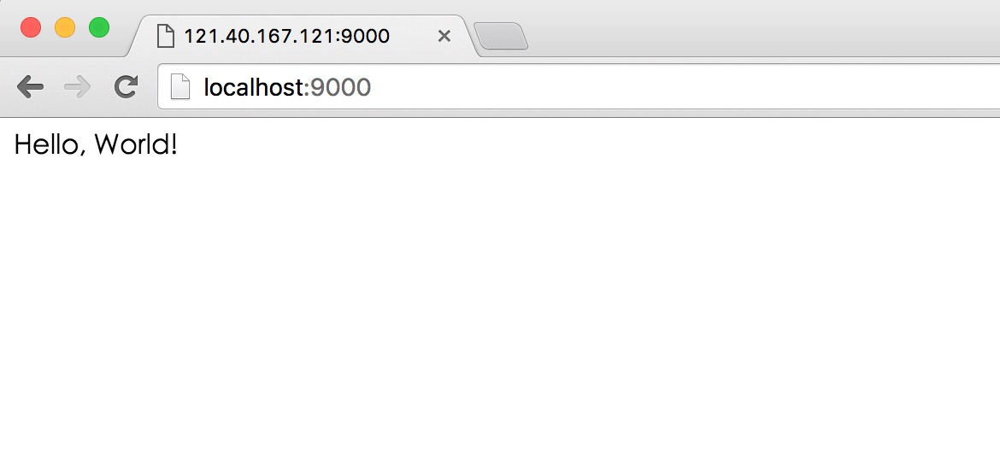

OpenResty 使用紹介
锤子科技はT2発表会でチケット収入をOpenRestyオープンソースプロジェクトに寄付しました。今日はOpenRestyとは何なのかを紹介します。

OpenResty 紹介
OpenResty(別名: ngx_openresty) は NGINX ベースのスケーラブルな Web プラットフォームであり、中国人の章亦春によって立ち上げられ、多くの高品質なサードパーティモジュールを提供しています。
OpenResty は強力な Web アプリケーションサーバーであり、Web 開発者は Lua スクリプト言語を使用して Nginx がサポートするさまざまな C および Lua モジュールを操作できます。さらに重要なのはパフォーマンス面で、OpenResty は 10K 以上の同時接続応答に十分耐えうる超高性能 Web アプリケーションシステムを迅速に構築できます。
360、UPYUN、阿里雲、新浪、騰訊網、去哪儿網、酷狗音楽などはすべて OpenResty のヘビーユーザーです。
OpenResty インストール
菜鸟教程は ubuntu14.04 ベースで OpenResty をインストールします。
OpenResty の依存ライブラリ: perl 5.6.1+、libreadline、libpcre、libssl。
そのため、まずこれらの依存ライブラリをインストールする必要があります。非常に簡単です:
apt-get install libreadline-dev libpcre3-dev libssl-dev perl
システムが CentOS または RedHat の場合は、次のコマンドを使用できます:
yum install readline-devel pcre-devel openssl-devel
次に、公式（https://openresty.org/cn/）から最新の OpenResty ソースパッケージをダウンロードし、解凍してコンパイル・インストールします:
wget https://openresty.org/download/ngx_openresty-1.9.7.1.tar.gz # 下载 tar xzvf ngx_openresty-1.9.7.1.tar.gz # 解压 cd ngx_openresty-1.9.7.1/ ./configure make make install
デフォルトではプログラムは /usr/local/openresty ディレクトリにインストールされます。./configure --help を使用して、より多くの設定オプションを確認できます。
Hello World 実例
インストールが成功すると、openresty を使用して HTML ページを直接出力できます。
まず、作業ディレクトリを作成できます:
mkdir /home/www cd /home/www/ mkdir logs/ conf/
logs ディレクトリはログの保存に使用され、conf は設定ファイルの保存に使用されます。
次に、conf ディレクトリに nginx.conf ファイルを作成します。コードは以下のとおりです:
worker_processes 1;
error_log logs/error.log;
events {
worker_connections 1024;
}
http {
server {
listen 9000;
location / {
default_type text/html;
content_by_lua '
ngx.say("<p>Hello, World!</p>")
';
}
}
}
nginx の設定に詳しければ、上記のコードに馴染みがあるはずです。ここでは HTML コードを設定ファイルに直接記述しています。
openresty の起動
デフォルトでは openresty は /usr/local/openresty ディレクトリにインストールされます。起動コマンドは次のとおりです:
cd /home/www /usr/local/openresty/nginx/sbin/nginx -p `pwd`/ -c conf/nginx.conf
何も出力されなければ起動成功です。-p はプロジェクトディレクトリを指定し、-c は設定ファイルを指定します。
次に、curl を使用して正常にアクセスできるかテストできます:
curl http://localhost:9000/
出力結果は次のとおりです:
<p>Hello, World!</p>
またはブラウザで http://localhost:9000/ にアクセスします:

ほら、設定ファイルに記述した HTML が正常に出力されています。
OpenResty の目標は、Web サービスを Nginx サービス内部で直接実行させ、Nginx のノンブロッキング I/O モデルを十分に活用し、HTTP クライアントリクエストだけでなく、MySQL、PostgreSQL、Memcached、Redis などのリモートバックエンドに対しても一貫した高性能な応答を行うことです。
そのため、高性能なサービスにとっては、サードパーティ言語（PHP、Python、Ruby）などを介してデータベースにアクセスしてから返す必要がなく、OpenResty を直接使用して MySQL や Redis などにアクセスできます。これによりアプリケーションのパフォーマンスが大幅に向上します。
関連サイト
- OpenResty 英語公式サイト:http://openresty.org/
- OpenResty 中国語公式サイト:http://openresty.org/cn/
- Nginx Wiki 公式サイト:http://wiki.nginx.org/
- Lua 入門チュートリアル:Lua 入門チュートリアル